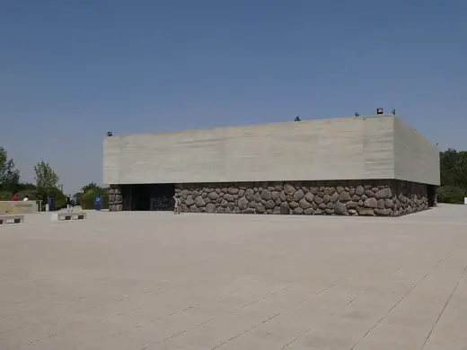
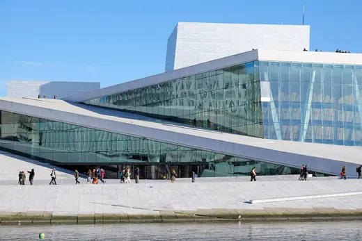

Buildings 1035
Sort
 Elbphilharmonie2017 · Hamburg
Elbphilharmonie2017 · Hamburg Casa da Música2005 · Porto
Casa da Música2005 · Porto
Yad Vashem Holocaust History Museum2005 · Jerusalem Queen Alia International Airport2013 · Amman
Queen Alia International Airport2013 · Amman Guthrie Theater2006 · Minneapolis
Guthrie Theater2006 · Minneapolis Teshima Art Museum2010 · Teshima
Teshima Art Museum2010 · Teshima Aga Khan Museum2014 · Toronto
Aga Khan Museum2014 · Toronto Louvre Abu Dhabi2017 · Abu Dhabi
Louvre Abu Dhabi2017 · Abu Dhabi Padre Pio Pilgrimage Church2004 · San Giovanni Rotondo
Padre Pio Pilgrimage Church2004 · San Giovanni Rotondo One Central Park2014 · Sydney
One Central Park2014 · Sydney Kauffman Center for the Performing Arts2011 · Kansas City
Kauffman Center for the Performing Arts2011 · Kansas City Dokk12015 · Aarhus
Dokk12015 · Aarhus Scottish Parliament Building2004 · Edinburgh
Scottish Parliament Building2004 · Edinburgh High Line2009 · New York
High Line2009 · New York CCTV Headquarters2012 · Beijing
CCTV Headquarters2012 · Beijing Museum of Modern Art2004 · New York
Museum of Modern Art2004 · New York 56 Leonard Street2017 · New York
56 Leonard Street2017 · New York Acropolis Museum2009 · Athens
Acropolis Museum2009 · Athens London Stadium2011 · London
London Stadium2011 · London Marina Bay Sands2010 · Singapore
Marina Bay Sands2010 · Singapore Liège-Guillemins Station2009 · Liège
Liège-Guillemins Station2009 · Liège Rolex Learning Center2010 · Lausanne
Rolex Learning Center2010 · Lausanne Jewel Changi Airport2019 · Singapore
Jewel Changi Airport2019 · Singapore Palau de les Arts Reina Sofia2005 · Valencia
Palau de les Arts Reina Sofia2005 · Valencia
Oslo Opera House2008 · Oslo The Shard2012 · London
The Shard2012 · London Burj Khalifa2010 · Dubai
Burj Khalifa2010 · Dubai Tate Modern2000 · London
Tate Modern2000 · London Flame Towers2012 · Baku
Flame Towers2012 · Baku Therme Vals1996 · Vals
Therme Vals1996 · Vals de Young Museum2005 · San Francisco
de Young Museum2005 · San Francisco Blavatnik School of Government2015 · Oxford
Blavatnik School of Government2015 · Oxford The Interlace2013 · Singapore
The Interlace2013 · Singapore V&A Dundee2018 · Dundee
V&A Dundee2018 · Dundee London Bridge Station2018 · London
London Bridge Station2018 · London Superkilen2012 · Copenhagen
Superkilen2012 · Copenhagen Seattle Central Library2004 · Seattle
Seattle Central Library2004 · Seattle Braga Municipal Stadium2003 · Braga
Braga Municipal Stadium2003 · Braga Sendai Mediatheque2001 · Sendai
Sendai Mediatheque2001 · Sendai City of Arts and Sciences1998 · Valencia
City of Arts and Sciences1998 · Valencia Markthal2014 · Rotterdam
Markthal2014 · Rotterdam Allianz Arena2005 · Munich
Allianz Arena2005 · Munich 21st Century Museum of Contemporary Art, Kanazawa2004 · Kanazawa
21st Century Museum of Contemporary Art, Kanazawa2004 · Kanazawa Suzhou Museum2006 · Suzhou
Suzhou Museum2006 · Suzhou Bloomberg London2017 · London
Bloomberg London2017 · London Danish Maritime Museum2013 · Helsingor
Danish Maritime Museum2013 · Helsingor Perth Arena2012 · Perth
Perth Arena2012 · Perth De Rotterdam2013 · Rotterdam
De Rotterdam2013 · Rotterdam